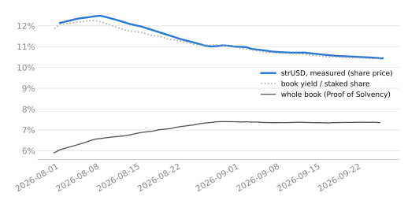
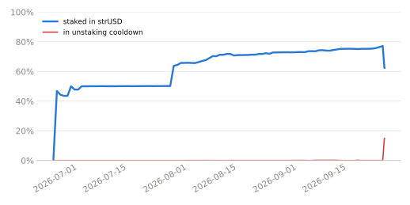
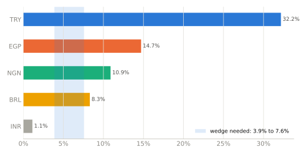

strUSD yield monitor
Where does a synthetic dollar's yield come from? An independent reading of Tori Finance's strUSD from public data only.
Data as of 2026-09-25 13:18 UTC. Updated twice a day. Not investment advice. Not affiliated with Tori Finance or RockawayX.
strUSD paid 10.44% net over the last 30 days, measured from its on-chain share price. Tori's book as a whole earned 7.35%: only staked trUSD receives rewards, so stakers also collect the carry of unstaked trUSD.
The split explains the measured yield: book yield divided by the average staked share over the same 30 days (73.3%, read on-chain) gives 10.55%, against 10.44% measured. If everything were staked, strUSD would pay the book's yield, about 7.6%.
10.78M trUSD (14.9% of supply) is waiting in the unstaking cooldown, so only 62.4% of trUSD is staked now. While it waits, today's book yield is compatible with a staker yield near 12.5%; if it is redeemed, the staked share returns to about 73.3% (near 10.5%). Projections at a constant book yield, not forecasts.
On Tori's disclosed allocation (72.7% money markets), the money-market sleeve must earn 8.0% to 11.7% in hedged dollars, a wedge of 3.9% to 7.6% over the 4.08% USD rate.
Checks against the chain
Stakers earn the book's yield divided by the staked share

Share of trUSD supply staked, and waiting to unstake

Which onshore markets could deliver it?

Method and sources
strUSD share price, reward and loss events, trUSD supply and staking: Ethereum mainnet (strUSD
0x2808…5815, trUSD 0xd058…0697, cooldown silo 0xF7c0…60B4, as listed on
docs.tori.finance). Reserves, allocation, maturity and cumulative rewards: Tori's Proof of Solvency
(Accountable), tori.accountable.capital. USD rates: FRED (3-month T-bill, converted to a money-market yield).
Onshore yields: Central Bank of Nigeria, Central Bank of Egypt, ANBIMA, Reserve Bank of India and the Turkish
Treasury, each converted exactly from its published quote to a simple ACT/365 yield. Every figure is
compatible with the data; none states what Tori holds. The protocol's share of gross carry is not published,
so gross figures are ranges.